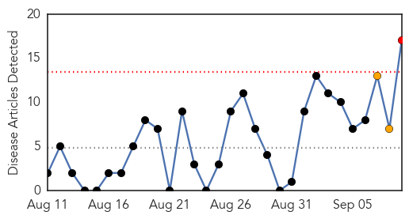
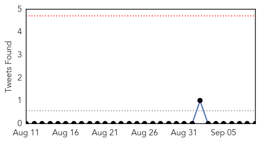
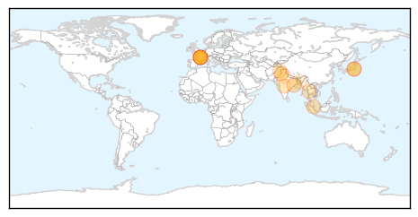
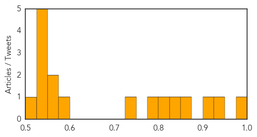
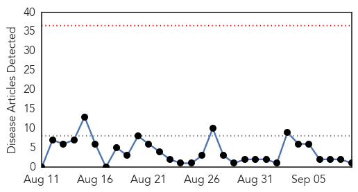

Dengue Fever
30-Day Web Trend
1 alerts, 2 warnings

30-Day Twitter Trend
0 alerts, 0 warnings

Article Locations
Article Confidences
Top Articles:
- 0.987
- Japan dengue outbreak prompts CDC travel warning
- 0.929
- Japanese firm may market dengue vaccine in 2017
- 0.911
- 'Dengue' death sparks tension at Tata facility
- 0.851
- Dengue surveillance and response system being developed to mitigate sufferings
- 0.849
- Too early to assess the effects of dengue vaccine: Faishal Ibrahim
- 0.819
- First dengue fever case outside Tokyo reported
- 0.781
- SE Asian Health Ministers commit to control, eliminate vector-borne diseases
- 0.750
- War against vector-borne diseases
- 0.586
- Citizens urged to play role in anti-dengue drive
- 0.553
- South Asian nations pledge to fight vector-borne diseases
- 0.552
- Northern Voices Online South Asian nations pledge to fight vector-borne diseases
- 0.546
- South Asian nations pledge to fight vector-borne diseases
- 0.542
- South Asian nations pledge to fight vector-borne diseases
- 0.541
- South Asian nations pledge to fight vector-borne diseases
- 0.535
- South Asian nations pledge to fight vector-borne diseases
- 0.531
- South Asian nations pledge to fight vector-borne diseases
- 0.508
- South Asian nations pledge to fight vector-borne diseases
Top Tweets:
- 0.520
- Flavivirus news: Delhi Dengue Updates: 40 cases of dengue in Delhi, NCR - TheHealthSite: TheHea... http://t.co/FtkGes9uCN pathogenposse
Chikungunya
30-Day Web Trend
0 alerts, 0 warnings

30-Day Twitter Trend
0 alerts, 0 warnings

Article Locations

Article Confidences

Top Articles:
Top Tweets:
- 0.702
- “@CIDRAP: NEWS SCAN: Saudi MERS illness; Chikungunya cases; Polio in Cameroon, Pakistan; Quick virus spread http://t.co/Ft4Cck9pW2”